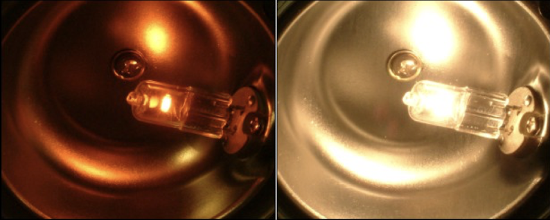
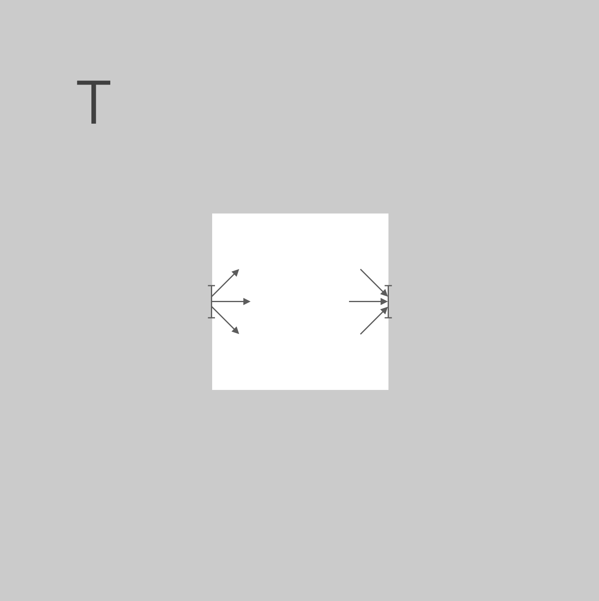
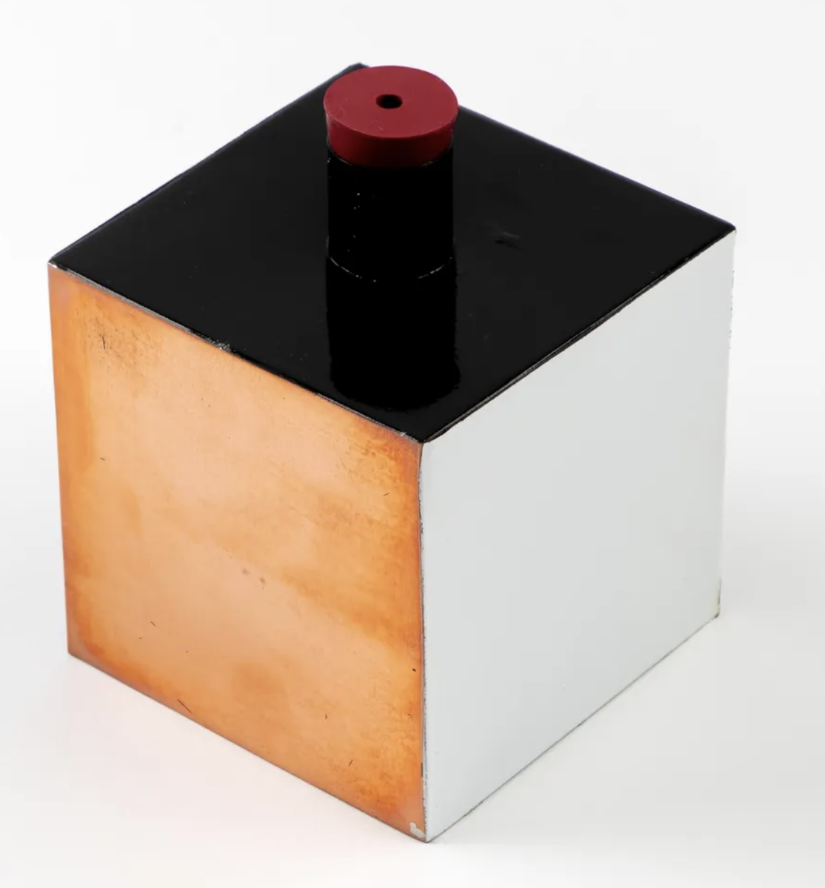

Black body radiation represents one of the pivotal problems that led to the birth of quantum mechanics. While seemingly a purely thermodynamic phenomenon - the electromagnetic radiation emitted by an idealized perfect absorber in thermal equilibrium - its explanation required a radical departure from classical physics.
In the late 19th century, classical physics completely failed to explain the observed spectrum of black body radiation. The classical Rayleigh-Jeans law predicted that the intensity of radiation would increase indefinitely with frequency (the ‘ultraviolet catastrophe’), which clearly contradicted experimental measurements. This crisis in physics was resolved only when Max Planck introduced the revolutionary concept that electromagnetic energy could only be emitted in discrete quantities or ‘quanta’ - an idea that would become one of the fundamental principles of quantum mechanics.
The study of black body radiation thus marks the historical transition point from classical to quantum physics. Planck’s solution not only explained the observed radiation spectrum but introduced the quantum of action \(h\) (Planck’s constant), which would become central to all of quantum mechanics. This topic demonstrates how quantum effects emerge even in seemingly classical macroscopic systems when we examine them carefully enough.
The figure below displays the emission of a light bulb with a tungsten filament. The filament is heated up to a specific temperature by different currents.

Figure 1— Light emission at different temperatures. The filament of the light bulb is heated up to different temperatures by varying the current. The color of the emitted light changes with the temperature of the filament.
Without dispersing the spectrum we directly notice the different color of the light emitted by the filament. While the heating mechanism is different for different materials, the emitted spectrum is always similar and solely depends on the temperature of the radiator. The emitted spectrum is called the blackbody spectrum and is universal for all materials.
Blackbody
Note
A blackbody is a model of a radiation source whose emission depends only on its temperature. Its emission, however, does not depend on the material the radiator is made from, nor on its surface or any other potential characteristics.
Consider a body with a cavity as depicted below. The body is heated to a certain temperature \(T\) and the cavity is closed.

A body with a cavity. The body is heated to a certain temperature \(T\) and the cavity is closed.
The system is in thermal equilibriums and thus each quadratic degree of freedom carries an energy of \(0.5 k_B T\), where \(k_B=1.21.380649 \times 10^{-23} \text{ J/K}\) is the Boltzmann constant.
Each surface element of the cavity emits radiation at a specific frequency \(\nu\). The amount of power that is radiated by a surface element \(\mathrm{d} A\) into a solid angle element \(\mathrm{d} \Omega\) at a frequency interval \(\mathrm{d} \nu\) relates to the property of its surface, i.e. the emissivity \(E^{\ast}_{\nu}\)
The emissivity is thereby a number between 0 and 1. In a simular way, each surface element at the cavity absorbs a certain power under a solid angle element and frequency intervall. The absorbed power is given by
where \(S^{\ast}_{\nu}\) is the spectral radiancy, so the radiated power per unit area, per unit solid angle and per unit frequency interval. The absorption capability \(A_{\nu}\) is also a number between 0 and 1.
In the steady state, the body emits and absorbs the same amount of power and thus
The spectral randiancy times the frequency dependent absorptivity is equal to the spectral emission emissivity. This is known as Kirchhoff’s law of thermal radiation.
From the Kirchhoff’s law we can see that a perfectly absorbing body \(A_{\nu}=1\) is also a perfect emitter. This is the case for a blackbody, which absorbs all radiation incident on it and emits the maximum amount of radiation possible at a given temperature.
Note that in the case of a blackbody, the absorptivity does not depend anymore on the frequency \(\nu\), while it will for a real body. In the case of a blackbody, the spectral radiancy \(S^{\ast}_{\nu}\) is then only a function of the temperature \(T\) and needs to be calculated from teh cavity structure, i.e. the modes of the cavity, which we will calculate next.
The Leslie Cube Experiment
The Leslie Cube, developed by John Leslie in 1804, was one of the first experimental demonstrations of how surface properties affect thermal radiation. The apparatus consists of a cubic vessel with different surface treatments on each face (e.g., polished metal, blackened surface, rough surface), filled with hot water.

Figure 2— Leslie Cube. The cube is filled with hot water, and each face has a different surface treatment. The radiation emitted from each face is measured using a thermopile detector. The experiment demonstrated that different surfaces emit radiation differently at the same temperature, and that good absorbers are also good emitters.
By measuring the radiation emitted from each face using a thermopile detector, Leslie showed that:
Different surfaces emit radiation differently at the same temperature
Good absorbers are also good emitters (leading to Kirchhoff’s law)
The emissivity depends on the surface properties but not on the material inside
This simple but elegant experiment helped establish fundamental principles of thermal radiation and provided early experimental evidence for what would later be formalized as Kirchhoff’s law of thermal radiation:
To determine the spectral energy density in the cavity \(S^{\ast}_{\nu}\), we need to calculate two quantities: the number of modes in the cavity and the average energy per mode. While calculating the number of modes is relatively straightforward, determining the average energy per mode is more complex and ultimately leads to Planck’s law of radiation.
The number of modes in the cavity corresponds to the number of possible standing waves that can exist in the cavity. Let’s first consider a simple one-dimensional case where the wave propagates along the z-direction, i.e. \(k=k_z\). When an electric field \(\vec{E} \left( z, t \right) = E_0 \cos \left( \omega t - k_z z \right) \; \vec{e_x}\) is incident on a conducting surface at \(z = 0\), the tangential components of the electric field must vanish. This leads to:
\[
\vec{E} \left( z = 0, t \right) = E_{0,\mathrm{I}} \; \vec{e_x} + E_{0,\mathrm{R}} \; \vec{e_x} = 0
\]
The superposition of incident and reflected waves results in a standing wave:
\[
\vec{E} \left( z, t \right) = 2 E_0 \sin \left( k_z z \right) \sin \left( \omega t \right) \; \vec{e_x} \mathrm{,}
\]
where the wavevector \(k_z\) is given by \(k_z = \omega / c_0\) with \(c_0\) being the speed of light in vacuum. For a second conducting surface at \(z = a\), the boundary condition requires:
\[
\vec{E} \left( z = a, t \right) = 2 E_0 \sin \left( k a \right) \sin \left( \omega t \right) \; \vec{e_x} = 0
\]
leading to:
\[
k_z = o \frac{\pi}{a}
\]
These represent the modes in a one-dimensional cavity. For a three-dimensional cavity, we can analyze each direction independently, obtaining the following conditions for the wavevector components:
\[
\begin{eqnarray}
k_x & = & n \frac{\pi}{a}\\
k_y & = & m \frac{\pi}{b}\\
k_z & = & o \frac{\pi}{c}
\end{eqnarray}
\]
where \(m,n,o\) are natural numbers. The magnitude of the wavevector is \(\left| \vec{k} \right| = \sqrt{k_x^2 + k_y^2 + k_z^2}\), which determines the possible frequencies \(\omega\) in the cavity
with \(\vec{E}_{0} \left( m,n,o \right) = \left( E_{0,x},E_{0,y},E_{0,z} \right)^{\mathrm{T}}\) and
\[
\begin{eqnarray}
E_{0,x} & = & A \cdot \cos \left( n \frac{\pi}{a} x \right) \sin \left( m \frac{\pi}{b} y \right) \sin \left( o \frac{\pi}{c} z \right)\\
E_{0,y} & = & B \cdot \sin \left( n \frac{\pi}{a} x \right) \cos \left( m \frac{\pi}{b} y \right) \sin \left( o \frac{\pi}{c} z \right)\\
E_{0,z} & = & C \cdot \sin \left( n \frac{\pi}{a} x \right) \sin \left( m \frac{\pi}{b} y \right) \cos \left( o \frac{\pi}{c} z \right)\\
\end{eqnarray}
\]
This system, comprising a box with ideally conducting walls, is known as a cavity resonator, and the possible standing waves are called the resonator’s principle oscillations or resonator modes.
As mentioned before, we are interested in the number of modes that fit into the cavity. For that purpose we need to count the number of modes within a certain frequency range. In order to simplify the calculation a bit, we restrict out box to a cube with edge length \(a\) such that
We can visualize the possible modes in k-space (where \(k_x\), \(k_y\), and \(k_z\) are our axes). The points \((m,n,o)\) create an evenly-spaced grid with spacing \(\pi/a\) between points. Since each combination of \((m,n,o)\) represents one mode in the resonator, counting the grid points, or better the number of unit cell cubes with a length \(\pi/a\) tells us the number of possible modes.
Figure 3— Two-dimensional k-space with a circle representing a sphere in two-dimensional space.
When considering large values where \(\sqrt{m^2 +n^2 +o^2} \gg 1\), the sphere radius in k-space \(\left| \vec{k} \right|\) becomes much larger than \(\pi / a\), corresponding to wavelengths \(\lambda\) much smaller than the cavity size \(a\). In this limit, we can approximate the number of allowed modes \(N_{\mathrm{L}}\) (where \(m,n,o > 0\)) by calculating the volume occupied by unit cells within the first octant of a sphere with radius \(\left| \vec{k} \right|\). The volume of this octant is:
Since each standing wave can have two independent polarization states, the total number of modes below frequency \(\omega_{\mathrm{S}}\) is twice the previous result and we find the total number of modes up to a limiting frequency \(\omega_{\mathrm{S}}\)
When we now increase the limiting frequency \(\nu_{\mathrm{S}}\), the number of modes increases. This increase is best represented by the spectral density of modes, that is the number of allowed modes per unit volume of the resonator within the interval \(\left[ \nu ; \nu + \Delta \nu \right]\). A straightforward calculation of the first derivative of the density of modes with respect to the frequency \(\mathrm{d}n/\mathrm{d}\nu\) gives us an expression for the spectral mode density
\[
\frac{\mathrm{d} n }{\mathrm{d} \nu} = \frac{8 \pi \nu^2}{c_0^3}
\]
So far we have calculated that only under particular conditions standing waves can be established within a cubic cavity. These eigen-oscillations are called “modes of the cavity”. Furthermore, if the wavelength is small compared to the cavity dimensions, we derived the spectral density of modes, that is the number of modes within one cubic meter of volume within the interval between \(\nu\) and \(\nu + \mathrm{d}\nu\) is
This is the spectral density of optical modes per volume.
Density of optical modes per unit volume
This equation represents the density of optical modes per unit volume and frequency interval in free space. It has important consequences for lasing:
The density of modes increases quadratically with frequency (\(\nu^2\))
This means there are more available modes at higher frequencies
For lasers, this affects:
The threshold conditions for lasing
The emission probability at different frequencies
The competition between modes
In practical terms, it helps explain why it’s generally easier to achieve lasing at shorter wavelengths (higher frequencies) where there are more available modes, although other factors like gain and losses also play crucial roles.
This spectral mode density is now the basis for any further consideration. To obtain the spectral energy density we just need to multiply the mode density with the energy stored in each mode \(\bar{W}_{\nu} \left( T \right)\) and obtain the spectral energy density
\[
\omega_{\nu} \; \mathrm{d} \nu = n \left( \nu \right) \cdot \bar{W}_{\nu} \left( T \right) \cdot \mathrm{d}\nu = \frac{8 \pi \nu^2}{c_0^3} \cdot \bar{W}_{\nu} \left( T \right) \cdot \mathrm{d}\nu
\]
This spectral energy density \(\omega_{\nu}\) relates to the spectral radiancy \(S^*_{\nu}\) through:
\[
S^*_{\nu} = \frac{c_0}{4\pi} \omega_{\nu}
\]
Rayleigh–Jeans law
One way to obtain a mean energy per mode is to consider classical thermal equilbrium and equipartition. In this case, each quadratic degree of freedom contains \(0.5 k_B T\) energy such that
\[
\bar{W_{\nu}} \left( T \right) = k_B \cdot T \mathrm{,}
\]
with \(k_B\) and \(T\) being the Boltzmann constant and absolute temperature, respectively. Therefore, within the limit of the classical approach the spectral energy density,
\[
\omega_{\nu} \; \mathrm{d} \nu = \frac{8 \pi \nu^2}{c_0^3} \; k \; T \; \mathrm{d}\nu \mathrm{,}
\]
rises quadratically with respect to the frequency \(\nu\). This quadratic relation is known as Rayleigh-Jeans law. As a consequence a small hole in the cavity wall will then emit radiation into the solid angle of \(\mathrm{d} \Omega = 1 \mbox{ sr}\) with the radiance of
If we now consider a temperature of about \(5000 \; \mathrm{K}\) we achieve a wavelength bigger than \(2 \; \mu\mathrm{m}\), being well in the infrared region. For this spectral region the measured radiance and the theoretical prediction are in agreement. However, if we reduce the wavelength, disparities between experimental findings and the prediction appear. Moreover, if the Rayleigh-Jeans law was valid, there would be the so-called ultraviolet catastrophe! In the case of decreasing frequencies, the spectral energy density and the integrated radiance will rise until they become infinitely big for vanishing frequencies.
Comparison between blackbody radiation (solid lines) and radiation as described through the Rayleigh-Jeans law (dashed lines) at different temperatures.
Planck’s law
In 1900 Max Planck tackled the problem of how to avoid the ultraviolet catastrophe and describe the blackbody radiation as a whole. He assumed that the energy of the absorbing and emitting oscillators in the wall can release or absorb small packets of energy given by \(h \cdot \nu\), where \(h\) was used as a helper constant. Taking the limit \(h\rightarrow 0\) should then lead to the classical result, yet Planck found that the classical limit was not reached. Rather, the quantization of energy with $h=6.626 ^{-34} ; led to a new law of radiation, which was in perfect agreement with the experimental findings. The energy at a particular frequency \(\nu\) is then quantized in terms of the number of energy packets \(n\) as
\[
W_{\nu} = n \cdot h \cdot \nu
\]
where \(n\) is a natural number. If we now consider thermal equilibrium, the probability \(p \left( W_{\nu} \right)\) of finding an oscillator with energy \(W_{\nu} = n h \nu\) (meaning the eigenstate is occupied by \(n\) photons) is given by the Boltzmann distribution:
\[
p \left( W_{\nu} \right) = \frac{
\mathrm{e}^{- \frac{n \cdot h \cdot \nu}{k \cdot T}}
}{
\sum_{n=0}^{\infty} \mathrm{e}^{- \frac{n \cdot h \cdot \nu}{k \cdot T}}
}
\]
Note that a Boltzmann distribution provides the maximum entropy for a given energy, i.e. it spreads the energy as evenly as possible over the available states (modes) of the systems. The average energy per oscillator can then be calculated as the expectation value of energy, weighting each possible energy level by its probability of occupation. The averaged energy per oscillator then reads as \(\bar{W}_{\nu} = \sum_{n=0}^{\infty} p\left( nh\nu \right) n \, h\, \nu\) and further
Here \(\omega \left( \nu,T \right) \mathrm{d}\nu\) represents the spectral distribution of the energy density per frequency interval; its unit is \(\left[ \omega \left( \nu,T \right) \right] = \mbox{Jsm}^3\). The radiance of the area element \(\mathrm{d}A\) emitted into the solid angle \(\mathrm{d} \Omega\) then is
Planck’s theory posited that oscillator energy exists in discrete units or packets denoted by \(n\), following the relation \(W_{\nu} = n \cdot h \cdot \nu\). This concept was later expanded by Einstein in his explanation of the photoelectric effect, demonstrating that light itself consists of discrete energy quanta proportional to frequency \(\nu\). Einstein’s interpretation, expressing the energy of the electromagnetic field as \(E = h \nu\), established the foundation for understanding light as discrete particles called photons.
While we’ve previously written Planck’s law in terms of frequency \(\nu\), we can alternatively express it using wavelength \(\lambda\) through the relationship \(\lambda = c/\nu\). Making this conversion requires noting that \(\mathrm{d}\lambda = -\left( c / \nu^2 \right) \mathrm{d} \nu\). This allows us to express the spectral energy density
\[
\omega \left( \lambda,T \right) \mathrm{d} \lambda = \frac{8 \pi h c_0}{\lambda^5} \, \frac{\mathrm{d} \lambda}{\mathrm{e}^{\frac{h c_0}{\lambda k T}} -1}
\]
in terms of wavelength \(\lambda\) and temperature \(T\).
Code
# Constantsh =6.626e-34# Planck's constant (J⋅s)c =2.998e8# Speed of light (m/s)k =1.381e-23# Boltzmann constant (J/K)# Wavelength range (0.1 to 8.0 micrometers, converted to meters)wavelengths = np.linspace(0.1e-6, 5.0e-6, 1000)# Temperature rangestemperatures_1 = np.arange(800, 2801, 200)temperatures_2 = np.arange(3000, 7001, 500)# Planck functiondef planck(wav, T): a =2.0* h * c**2 b = h * c / (wav * k * T)return a / ((wav**5) * (np.exp(b) -1.0))# Create the plotsfig, (ax1, ax2) = plt.subplots(1, 2, figsize=get_size(12, 8))# First subplot (800-2800 K)for T in temperatures_1: spectral_radiance = planck(wavelengths, T) ax1.plot(wavelengths*1e6, spectral_radiance*1e-12, label=f'{T} K')ax1.set_xlabel('wavelength [μm]')ax1.set_ylabel(r'S [W⋅sr$^{-1}$⋅m$^{-3}$] ×10$^{12}$')ax1.legend()ax1.set_ylim(0, 0.8)# Second subplot (3000-7000 K)for T in temperatures_2: spectral_radiance = planck(wavelengths, T) ax2.plot(wavelengths*1e6, spectral_radiance*1e-12, label=f'{T} K')ax2.set_xlabel('wavelength [μm]')ax2.set_ylabel(r'S [W⋅sr$^{-1}$⋅m$^{-3}$] ×10$^{12}$')ax2.legend()ax2.set_ylim(0, 80) # Adjusted y-axis limit for higher temperaturesplt.tight_layout()plt.show()
Planck’s law of blackbody radiation at different temperatures.
The sun is a blackbody radiator with a temperature of about \(5778 \; \mathrm{K}\). The spectral radiance of the sun is given by Planck’s law.
Figure 4— The sun spectrum at the earth as compared to Planck’s law. Due to the presence of absorption lines of water and other components in the atmosphere, the spectrum is not a perfect blackbody spectrum.
Since the spectrum is completly defined by the temperature of the blackbody, it is possible to estimate the temperature of the sun or other stars by comparing the spectrum of the sun with Planck’s law.
Properties of Planck’s Radiation Formula
Planck’s Radiation Law
The fundamental equation describing the spectral radiance of a black body: \[S(\lambda,T) = \frac{2hc^2}{\lambda^5} \frac{1}{e^{\frac{hc}{\lambda kT}} - 1}\]
where:
\(S(\lambda,T)\) is the spectral radiance [W⋅sr⁻¹⋅m⁻³]
\(h\) is Planck’s constant [J⋅s]
\(c\) is the speed of light [m/s]
\(k\) is the Boltzmann constant [J/K]
\(T\) is absolute temperature [K]
\(\lambda\) is wavelength [m]
Note that Plancks radiation law is only valid for propagating electromagnet modes. Evanscence modes are not included in this formula and do not follow Plancks radiation law. This opens a number of possibilities which are used for solar energy collection beyond the Shockley limit, for example in thermophotovaltaic cells, which convert the spectrals absorbance into heat radiation, that is shaped spectrally by metametarials to match the bandgap of the solar cell.
Stefan-Boltzmann Law
The total power radiated per unit area across all wavelengths: \[E = \sigma T^4\]
This can be derived by integrating Planck’s law over all wavelengths: \[E = \int_0^\infty S(\lambda,T) d\lambda = \sigma T^4\]
where \(\sigma = \frac{2\pi^5k^4}{15c^2h^3} \approx 5.67 \times 10^{-8}\) W⋅m⁻²⋅K⁻⁴
Solar Power at Earth’s Distance: A Stefan-Boltzmann Law Calculation
We can calculate the solar power arriving at Earth using the Stefan-Boltzmann law and basic geometric principles. The Stefan-Boltzmann law states that the total power emitted per unit area by a black body is given by:
\[E = \sigma T^4\]
where \(\sigma = 5.67 \times 10^{-8}\) W⋅m⁻²⋅K⁻⁴ is the Stefan-Boltzmann constant and T is the temperature in Kelvin.
For our calculation, we need:
Temperature of Sun’s surface: \(T_{sun} \approx 5778\) K
Radius of Sun: \(R_{sun} \approx 6.957 \times 10^8\) m
Distance Earth-Sun: \(d \approx 1.496 \times 10^{11}\) m (1 AU)
First, we calculate the power emitted per square meter at the Sun’s surface:
To find the power per square meter reaching Earth, we use the inverse square law. The total power is distributed over a sphere with radius equal to the Earth-Sun distance:
This value of 1361 W/m² is known as the solar constant or total solar irradiance (TSI) at the top of Earth’s atmosphere. It represents the power from the Sun reaching Earth before any atmospheric absorption. This calculated value matches well with measured values from satellites.
Wien’s Displacement Law
The wavelength of maximum emission: \[\lambda_{max} = \frac{b}{T}\]
This is derived by finding the maximum of Planck’s law: \[\frac{d}{d\lambda}S(\lambda,T) = 0\]
where \(b = \frac{hc}{4.965k} \approx 2898\) μm⋅K
Rayleigh-Jeans Approximation
The classical limit of Planck’s law for long wavelengths: \[S(\lambda,T) \approx \frac{2ckT}{\lambda^4}\]
This approximation is valid when \(\frac{hc}{\lambda kT} \ll 1\), and historically led to the “ultraviolet catastrophe” that Planck’s law resolved.